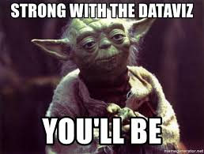
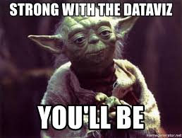

Assignment 6 « Data Visualization »
Brief
- Due date: 11:59pm 4/30/2020
- Stencil:
cs1951a_install data_vizorcp -r /course/cs1951a/pub/data_viz/stencil ~/course/cs1951a/data_viz - Handin:
cs1951a_handin data_viz - Files to submit:
dashboard.html,main.js,main.css,README.txt
Overview
Bad Data Viz is in fact the theme of our website. So, please let us indulge by listing just a few more examples here:

 

In this assignment, you will use D3, an interactive visualization library,
to develop your own data dashboard. D3 is extremely powerful and can be used to make very specific,
informative diagrams. We highly recommend that you complete the D3 + JavaScript
lab before you attempt this assignment. We have a ton of explanation and introduction to D3
in the lab.
To illustrate the capabilities of D3, here are some stunning examples of visualizations created with it:
We know that D3 code is easy to find online. Even if we provide you with reference implementations, do not copy any code.
Before you begin:
Many students find this assignment to be one of the most challenging in the class. This is because JavaScript is a new language and framework for many, and we don't formally teach it. We HIGHLY recommend you walk through the lab listed here before you begin. The solution code for the D3 lab is a great place for starter code on how to create your own graphs for this assignment.
Since this project is more free-form than previous assignment, there is no solution code for this assignment. We will do our best to debug your dashboard during TA hours, but TAs at hours can only be so helpful debugging your particular project. A few tips:
- Start early!
- Review the D3 lab and refer to the solution code for certain features (i.e. colors, tooltips, etc.)
- Look for resources online (DO NOT COPY!) and do your best
Assignment
Your task is to create your own informative D3 dashboard! This assignment, in particular, is very flexible. There are no strictly correct or incorrect answers since visualization is inherently subjective. That said, we will evaluate your work on a number of requirements listed below. Further, we expect that you incorporate concepts that Ellie has discussed in class like color palettes, font types/sizing, orientation, clarity, organization, and informativeness.
Dashboard
68 points
Datasets
(5 points! Just for using the right data...)
You must use data from one of the following datasets. Each dataset has a series of leading questions you may use as inspiration. You should make sure that your dashboard answers these questions. Imagine your boss gives you 2 weeks to build a dashboard on these issues.
Note: All 3 datasets are provided in the data directory under the data_viz
folder. Each topic includes a link to a Kaggle site with more information about the dataset.
-
Video Game Sales | Kaggle
Questions:
- Your boss wants to know the top 10 video games of all time or top 10 for a specific year.
- Your boss wants to understand which genre is most popular. We'd like to see genre sales broken out per region. (This question can be answered by showing the top genre in each region if you want to implement a map, otherwise you should show genre sales broken down by region in bar/scatter/line/pie etc.)
- Lastly, your boss wants to know which publisher to pick based on which genre a game is. Your chart should provide a clear top publisher for each genre (could be interactive or statically show).
-
International Football Results | Kaggle
Questions:
- Your boss wants to know the number of football games by year. You should show at minimum 5 years, but you can choose which years to show.
- Your boss wants to understand the top winning nations. We would like to see a winning percentage for the top 10 nations. You can show this in a map form if you would like to.
- Lastly, we are trying to bet on which team will win the world cup 2022. Over the last 2 world cups, which teams were top performing. You can decide how to interpret "top performing". A few approaches we would reccomend: winning percentage in the world cup, victory strength, strength of opponent. You may show any combination of those. We don't have a specific answer we expect, and you should explain your choice in the written questions.
-
Neflix Collection | Kaggle
Questions:
- Your boss wants to know the number of titles per genre on Netflix.
- Your boss wants to understand the average runtime of movies by release year.
- Lastly, we want to learn about the cast and directors. You have two choices here: 1) the top director + actor pairs by number of movies made 2) a flow chart where each actor is a node, and a link refers to a movie they both acted in (just the connection, no need to specify number of movies made together or which movies those are)
Dashboard Requirements
Please put your dashboard indashboard.html with your JavaScript D3 code in main.js
and any custom styling in main.css. Feel free to add new JavaScript files if you want.
Graph Structure
(35 points)
- You must have 3 graphs (10 points each)
- There must be 2 unique graphs (5 points)
Unique graphs are bar, line, scatter plot, heatmap, density, area, etc. You can see examples here. In our stencil we have setup three boxes for you to place your graphs, but you can feel free to adjust these based on your graph selection.
Interactivity
(10 points)
-
You must have 1 filter/toggle/interactive element of your dashboard. (5 points)
We define this as a clickable/writeable element that updates the graphs/look of the dashboard.
-
You must have 1 tooltip for a graph on your dashboard. (5 points)
We define this as information which appears when users hover over a data point‐ this can be combined with your clickable element, but a tooltip alone is not considered interactive.
Style
(8 points)
- Make sure to write graph/dashboard titles/units/axis/tooltips where appropriate.
- Your dashboard should properly use color. If it's all black, that's bad. If it's a rainbow that's bad. This is also an area to consider the accessibility of your dashboard. Picking color schemes that are color blind friendly is a great habit and something which is very easy. Online tools (e.g. https://coolors.co/) can help show if you colors are color blind friendly. This is not a requirement, but if your colors do not complement your visualization (distracting, unnecessary, confusing) we will deduct points.
Communication
(15 points)
- You use the provided data (5 points)
-
Graphs address questions for each data set (10 points)
We will evaluate your graph communication two-fold. Each graph will assessed 1) how well it communicates the information of the graph 2) how well it answers the question.
Extra Credit
(Up to +30 points!)
We think D3 is really cool, and some of you probably agree. We don't want to limit any of your creative impulses and therefore are offering bonus points for this assignment. Simply put, your final grade can be over 100% for this assignment. Here are some ways to earn bonus points:-
You implement some form of dynamic stats calculation. By dynamic, we mean that it updates
depending on which data is being shown. Our example dashboard calculates a regression line,
but you can show box plot whiskers, calculate percentiles, calculate a t-test.
If you choose to add this, please add a note below your dashboard and written answers which in 1-3 sentences explains what you did and why it's statistical. (10 points) -
You may attempt one or both of these and get up to an additional 20 points!
For some of the provided data sets and questions, we ask about geographic impact. One way to show this is with a bar/scatter/line graph. Another possibility is to show this on a geographic map! If one of your graphs is a "Map type" (https://www.d3-graph-gallery.com/) you earn an additional 10 points.
For other data sets we discuss the relationship between particular data points, particularly in a graph way. i.e. how many hops between 2 actors on Netflix. You can use D3 to make and visualize this graph! If one of your graphs is a a "Flow type" (https://www.d3-graph-gallery.com/) you earn an additional 10 points.
If you have any questions about whether a particular chart qualifies for either of these, please ask on piazza.
Example Dashboard
Created by CS 1951A's Arvind Yalavarti, we have an example D3 dashboard here. using the TA dataset from the D3 lab. Our dashboard goes above and beyond our expectations for you, but we though it would be helpful for reference, especially for those of you who want to go above and beyond.Use of External Libraries
We've already included D3 and Bootstrap in the stencil code provided. To perform statistical calculations
take a look at jStat and d3-regression.
If you would like to use either of these libraries, add the following lines to your dashboard.html
file:
<script> type="text/javascript" src="https://cdn.jsdelivr.net/npm/jstat@latest/dist/jstat.min.js"></script><script> type="text/javascript" src="https://unpkg.com/d3-regression@1.3.4/dist/d3-regression.min.js"> </script>
Run Specifications
To view your visualization in the browser, we're going to load the webpage via a local web server. Navigate to the directory containing yourdashboard.html file, and run
python -m http.server 8000You then can open a browser to the url
http://localhost:8000/dashboard.html to view your
dashboard.
Working Locally
We highly recommend setting up FUSE/SSHFS for Linux and Mac OSX users (instructions found at the bottom of the ML handout).Port Forwarding
Another alternative is to set up port forwarding. This will allow you to edit your code over SSH and view
your resulting dashboard locally.
When port forwarding, have two terminal windows open.
-
In the first terminal, SSH into a department machine normally. Note: record the name
of the machine (i.e.
cslab6e) -
Start a local webserver on the department machine with
python -m http.server 8000
-
On your local machine, run the following command
ssh <your login>@ssh.cs.brown.edu -N -L 8000:[HOSTNAME]:8000
Usingcslab6eas the example, your command would bessh <your login>@ssh.cs.brown.edu -N -L 8000:cslab6e:8000
http://localhost:8000/dashboard.html to view your
dashboard, and edits you make on the department machine will be reflected on the dashboard you are
viewing on your local machine.
Actually Locally
This assignment is completely in javascript and html. This means that it does not require packages or python to run! We recommend using the python http server to host the page as that is responsive. As such, if you install base python3 (or 2), have a text editor, and a web browser you can run this assignment natively on your machine. You should confirm things work the same (we have no reason to believe they wouldn't) on the department before handing in, but we do encourage you to develop locally if that is easy for you.
Written Questions
32 points
Write answers to the following questions below your dashboard indashboard.html :
- Describe how your dashboard answers the questions presented. You don't have to address every question directly, but should at a high level address the main questions. (10 points)
- List 3 reasons why D3 was helpful and improved your visualization (6 points)
- List 3 reasons why D3 would not be the best tool for creating a visualization (6 points)
Hopefully through this exercise, you've all seen how data visualizations are powerful tools that we can leverage
to efficiently and easily communicate ideas. However, not all graphs/charts are made equal. Read this article on
misleading graphs and answer the
following questions underneath your dashboard in dashboard.html as well.
- Give two different ways in which graphs may confuse or mislead viewers. What are ways to avoid this or fix these issues? (4 points)
- Data visualizations can be found everywhere. Find a real world example of a strong data graphic and explain what it does well. Next, find a not-as-good data graphic and explain what it does poorly and how to improve it. Please include a photo or link of your examples alongside your answer. Some cool places to look for visualizations could be on Fivethirtyeight, the Economist, or perhaps even the course website! (6 points)
If you enjoyed the reading or want to see some more real life examples of flawed visualizations (and how they could be improved), feel free to read the following articles as well. However, these are not required.
Handing In
Your ~/course/cs1951a/data_viz/must contain at least the following:
dashboard.htmlmain.jsmain.cssREADME.txt- containing anything you'd like the TAs to know about your handin
cs1951a_handin data_viz.
Important!
- Make sure your code runs on the department machines before handing in.
- Make sure you're using the correct relative path when referencing any of the js/html files in your handin. There will be a deduction if there are problems viewing your visualization due to incorrect file paths.
Credits
This assignment was created in Spring 2020 by Arvind Yalavarti (ayalava2) and Joshua Levin (jlevin1).